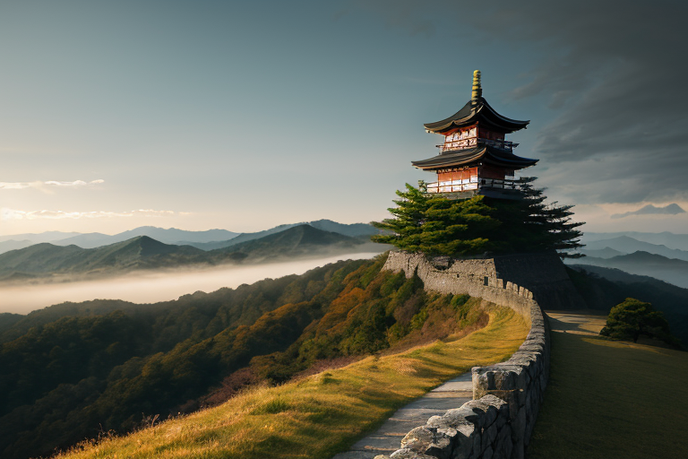
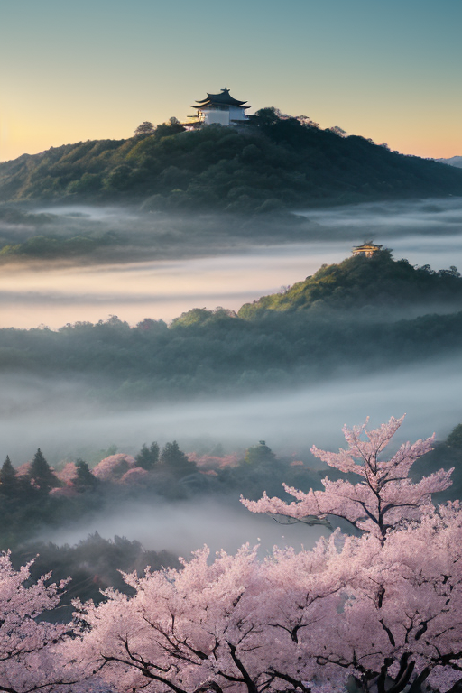
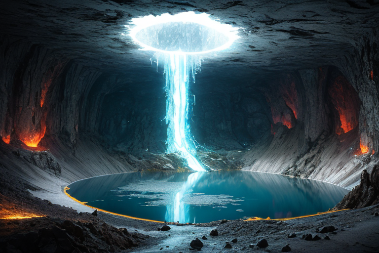
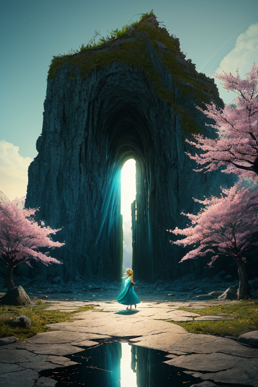
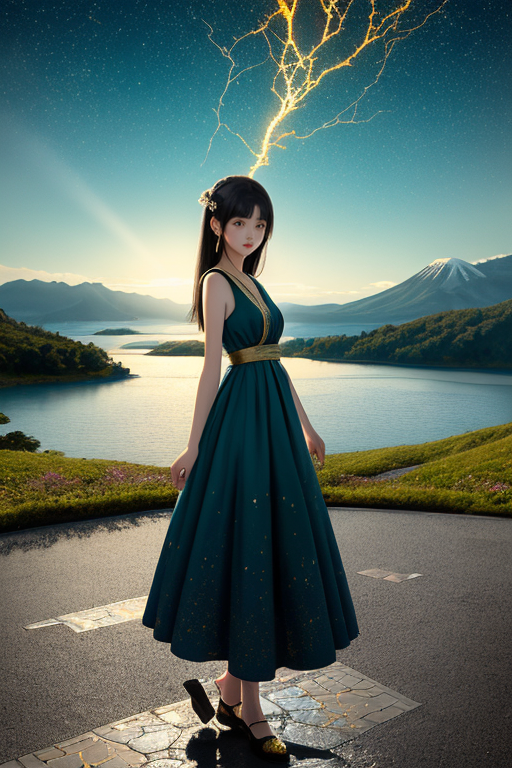

第一章 現実の福島
あなたはまだ気づいていない。この土地にも、王がいることを。
鶴ヶ城の天守閣から見下ろす会津の町並みは、静かに朝もやに包まれていた。白壁が柔らかな光を浴びて輝くその姿は、戊辰戦争の激戦、白虎隊の悲劇を、そして幾度もの復興の歴史を、ただ黙って内包している。観光客の笑い声が風に乗ってくる。そのすぐ隣で、王は立っていた。
名をフクシマル・リボーン。蒼と金の光を纏う、この地の調整者だ。彼の目には、この城が砲撃を受け、炎に包まれた過去の層が、現在の平和な光景と重なって見えていた。2011年3月、大地が割れ、海が牙を剥いた日も、彼はここに立っていた。歪みを微調整し、崩壊を寸前で食い止めようと、星から授かった力を振り絞った。それでも、彼が消せない現実は、あまりにも大きかった。
「……足りなかった」
唇を噛みしめ、拳を握る。悔恨が、感情を持たないはずの彼の胸を締め付ける。妖精リヴィアがそっと肩に止まる。「王様、あなたは最善を尽くされました」。その言葉さえ、今は重荷に感じた。壊れた世界を、再設計できるのか？ その問いが、磐梯山の影のように、彼の上に落ちていた。

第二章 歪みの兆候
鶴ヶ城の天守から見下ろす会津の町並みは、静かな朝靄に包まれていた。フクシマル・リボーンは石垣に手を触れる。掌の下で、二つの時代の断層が微かに軋む。戊辰戦争の硝煙。そして、あの日、大地を裂いた衝動。どちらも、この土地に深い「裂け目」を遺した。彼の役目は、その裂け目から漏れ出る歪みの波紋を、日常に溶け込む前に調整することだ。
今日も、微かな振動が地中を伝う。歴史の断層が、現代の地盤を僅かに揺さぶる予兆。彼は蒼と金の光を纏い、目に見えない「縫い針」を操る。歪みが増幅して新たな亀裂を生む前に、そっと繋ぎ、緩衝する。完全な修復ではない。せいぜい、家屋の軋みを一息分軽くし、不安の種が芽吹く速度を遅らせる程度だ。
「壊れた世界を、再設計できるか？」
その問いは、彼が縫う毎一針に滲む。答えは出ない。ただ、手を止めることは許されない。花見山に咲き始めた桃の花が、風に散る。彼は、その一片が落ちる軌道を、ほんの少しだけ変えた。

第三章 王の葛藤
磐梯山の噴火口湖、五色沼の水面が、突如として七色に揺らめいた。地殻の深部で、二つの巨大な歪みが衝突しようとしている。一つは自然の営みとしての地殻変動。もう一つは、人間が地中に封じた、冷たい「禍」の残滓が引き起こす微細な振動。フクシマル・リボーンの前に、二つの針路が示される。一方は、自然の歪みを優先し、衝突のエネルギーを地表へと分散させる道。多くの小さな揺れを生むが、封じられたものの安定は保たれる。もう一方は、その衝突そのものを「縫い合わせ」、新たな均衡点へと誘導する道。それは、封じられたものの状態を未知へと変えるかもしれない、危険な変革だった。
「主君、どちらを？」リヴィアの声は緊張に張り詰めている。
彼は目を閉じた。戊辰戦争の折、選択を誤り、多くの若き命を散らせた悔恨。そして、あの日、海と地の歪みを前に、為す術があったのかという自問。壊れた世界を、再設計できるか？
「……止めるのではない」彼は蒼と金の光を纏う指を掲げた。「変えるのだ」
針は、衝突点へと真っ直ぐに突き刺さった。世界は、一瞬、色を失った。

第四章 妖精との対話
色が戻った世界は、以前とは違っていた。鶴ヶ城の石垣はより堅固に、花見山の桜は一層深く根を張る。しかし、歪みの調整は完璧ではない。磐梯山の麓、五色沼の水面に、予期せぬ小さな亀裂が走った。
「主君、この変革は危険です」リヴィアが言った。彼女の目には、再生を司る者としての苦渋が浮かぶ。「均衡を崩すことで、新たな分断を生むかもしれません」
王は黙って大内宿の古い街並みを見つめた。梁に残る煤の跡は、過去の災禍の記憶だ。
「知っている」彼の声は低く、重い。「だが、リヴィア。壊れたものを、元通りに繕うだけが再生なのか。戊辰の後も、震災の後も、この地は『元通り』ではいられなかった。新たな道を、自らの手で切り拓いてきた」
ヒバリナが彼の肩に舞い降り、ささやいた。「希望とは、設計図のない再起です」
王はうなずいた。蒼と金の光が、彼の周りで静かに脈動する。壊れた世界を、再設計できるか？答えはまだない。だが、過去の悔恨に縛られ、ただ均衡を保つだけの日々は、終わりにしなければならない。

第五章 微調整と余韻
磐梯山の噴火口湖、五色沼の水面が、突如として金色に染まった。王が、自らの存在の核を「歪み」に差し出したのだ。彼は2011年3月11日、14時46分の一点に、全ての力を集中させた。巨大な歪みの奔流を前に、彼ができたのは、ほんの些細な「角度」の調整だけだった。津波が防波堤に到達するその一瞬、水流の分子間の摩擦を、0.01％だけ増幅した。それだけのことが、王の存在を構成する光の大半を消費した。
代償は大きかった。彼の姿はかすみ、声はか細くなり、これまでの記憶さえ霞み始める。しかし、その0.01％が、数キロ離れた地点で、一台のバスのエンジンのかかりを一呼吸遅らせ、乗っていた避難途中の家族を、かろうじて高台への分岐路へと導いた。歴史の大きな流れは変わらない。だが、その流れの中の、たった一つの命の軌跡は、ほんの少しだけ設計し直された。
花見山の桜の下で、王は薄れゆく意識の中で、ヒバリナのさえずりを聞いた。それは悲しみでも、歓びでもなく、ただそこにある、確かな「続き」の音だった。彼はもう、過去を繕う王ではない。未来を、ほんの少しだけ違う形で始めるための、最初の「歪み」となった。
あなたの町にも、王がいる。